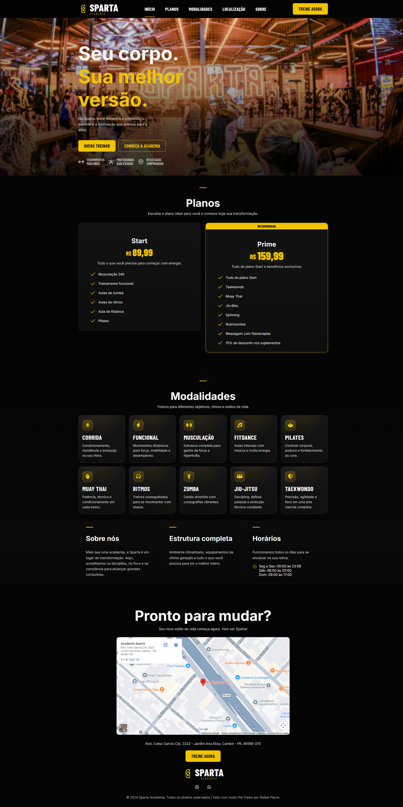

Landing Page Sparta é um projeto desenvolvido para apresentar a Academia Sparta de forma moderna, clara e objetiva. A página traz informações sobre a academia, sua localização e seus canais de contato, facilitando o acesso rápido para novos visitantes e possíveis clientes. O projeto foi pensado com foco em responsividade mobile, garantindo uma boa experiência em diferentes tamanhos de tela. Além disso, conta com um botão flutuante de contato via WhatsApp, que torna a comunicação mais prática e acessível.